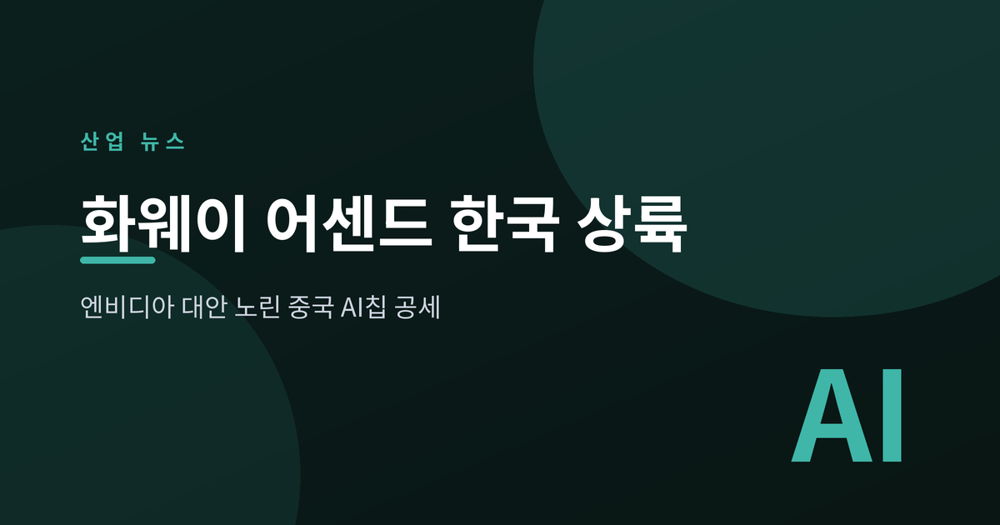
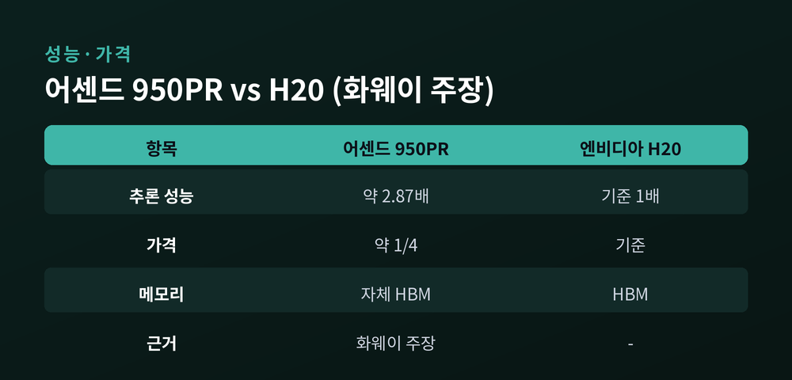
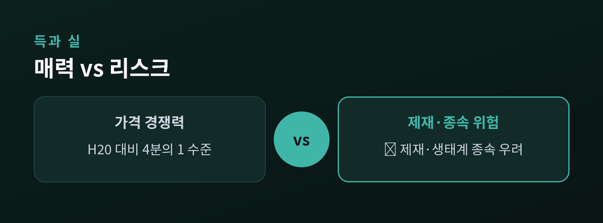
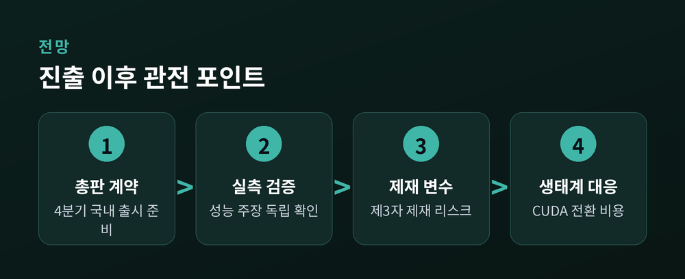

엔비디아 대안 노린 중국 AI칩의 승부수

중국 화웨이가 올해 4분기 한국 AI 반도체 시장 진출을 준비하고 있다. 무기는 AI 가속기 '어센드(Ascend)' 시리즈와 이를 대규모로 묶은 컴퓨팅 시스템 '아틀라스 950 슈퍼포드'다. 엔비디아 독점에 지친 시장을 겨냥한 가격 공세라는 점에서 관심이 쏠린다.
화웨이코리아가 4분기 어센드 950DT·950PR 가속기와 아틀라스 950 슈퍼포드를 국내에 출시할 계획인 것으로 전해졌다. 국내 유통을 맡을 총판 계약을 마쳤고, 기술 교육과 가격정책 수립 등 영업 채비에 들어갔다. 판매 채널로는 기존 파트너사인 SK쉴더스를 포함해 2개사가 거론된다 (출처: 전자신문).
성능·가격 주장은 화웨이 측 발표를 근거로 한다. 화웨이는 어센드 950PR이 엔비디아의 중국용 GPU 'H20' 대비 추론 연산 성능이 약 2.87배 높고, 가격은 약 4분의 1 수준이라고 밝혔다. 아틀라스 950 슈퍼포드는 어센드 칩을 최대 8192장까지 묶어 하나의 대규모 AI 인프라로 구성한다 (출처: 전자신문, TrendForce). 다만 이 수치는 독립 벤치마크가 아닌 제조사 자체 주장인 만큼, 실제 워크로드에서의 성능은 별도 검증이 필요하다.

핵심 배경은 미·중 반도체 규제다. 미국의 대중 수출 통제로 엔비디아의 고성능 칩 공급이 제약되면서, 대안을 찾는 수요가 생겼다. 화웨이는 미국 제재 속에서도 자체 고대역폭메모리(HBM)를 탑재한 어센드를 내놓으며 기술 자립을 과시했다 (출처: 아시아경제, ZDNet).
그러나 반대편의 우려도 뚜렷하다. 첫째는 지정학적 위험이다. 미국 상무부는 "전 세계 어디서든 화웨이 어센드 칩을 쓰는 것은 미국 수출 통제 위반"이라고 경고한 바 있어, 도입 기업이 제3자 제재 대상이 될 수 있다는 관측이 나온다 (출처: AI타임스). 둘째는 에코시스템 종속이다. 엔비디아 CUDA 생태계에 맞춰진 기존 소프트웨어 자산을 화웨이 플랫폼으로 옮기는 전환 비용이 만만치 않다. 여기에 중국산 장비에 대한 보안 민감도와 발열·전력 소모 문제도 걸림돌로 지목된다 (출처: 파이낸셜뉴스).

단기적으로 화웨이의 파상 공세가 국내 AI 인프라 조달에 가격 압박 요인이 될 가능성은 있다. 엔비디아 물량과 가격에 부담을 느끼는 일부 수요층에게 선택지가 늘어나는 셈이다. 반면 대기업·공공 영역은 미국 제재 리스크와 보안 심사 부담 탓에 도입에 신중할 공산이 크다.
메모리 업계에는 양날의 검이다. 화웨이가 자체 HBM으로 물량을 소화하면 삼성전자·SK하이닉스의 대중 HBM 수출에는 부정적일 수 있다. 결국 화웨이의 한국 안착 여부는 성능 주장에 대한 실측 검증, 제재 불확실성 해소, 그리고 소프트웨어 생태계 대응 속도에 달려 있다.

정리하면, 화웨이의 이번 진출은 '가격'이라는 강력한 카드와 '제재·종속'이라는 무거운 리스크가 정면으로 부딪히는 사안이다. 성능·가격 수치는 아직 제조사 주장 단계인 만큼, 실제 계약과 도입으로 이어지기까지는 검증과 지정학적 변수라는 관문을 넘어야 한다. 시장은 화웨이의 공세를 반기기보다, 득실을 신중히 저울질하는 국면에 들어섰다.